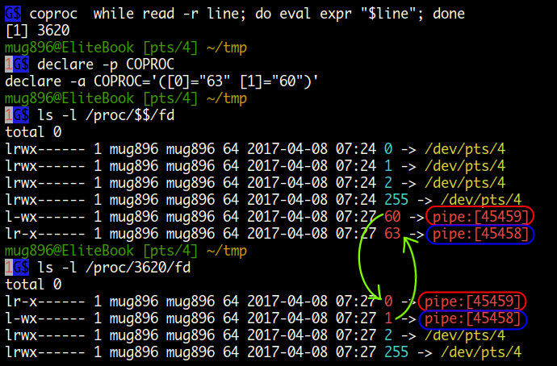

Keyword Commands
다음은 shell 에서 제공하는 키워드들 입니다. 대부분 compound commands 를 작성하는데 사용됩니다.
$ compgen -k | column
if then else elif fi case
esac for select while until do
done in function time { }
! [[ ]] coproc
기본적으로 명령 이름이 위치하는 곳에서 사용되고 명령의 인수 부분에서는 사용될 수 없습니다.
# 기본적으로 명령 이름이 위치하는 곳에서 사용된다.
$ if [ 1 = 1 ]; then echo yes; fi
yes
# 명령의 인수 부분에서는 사용될 수 없다.
# 다음은 if 문이 shell 에의해 처리되는 것이 아니고 sudo 명령의 인수로 전달되어 처리되므로 오류.
# ( sudo 명령이 실행할 if 라는 외부 명령은 존재하지 않는다. )
$ sudo if [ 1 = 1 ]; then echo yes; fi
bash: syntax error near unexpected token 'then'
# 다음은 'sh -c ...' 명령문이 sudo 에 전달되어 실행되고 if 문은 'sh -c' 에의해 실행된다.
$ sudo sh -c 'if [ 1 = 1 ]; then echo yes; fi'
yes
$ { echo hello; echo world ;} > file
$ OK
# 마찬가지로 sudo 명령이 실행할 '{' 라는 외부 명령은 존재하지 않는다.
$ sudo { echo hello; echo world ;} > file
bash: syntax error near unexpected token '}'
$ sudo sh -c '{ echo hello; echo world ;} > file'
$ OK
! 키워드는 명령 앞에 두어 종료 상태 값을 반전 시킬 수 있습니다.
$ [ 1 = 2 ] && echo yes
$ ! [ 1 = 2 ] && echo yes
yes
$ date -@ && echo yes....
date: invalid option -- '@'
Try 'date --help' for more information.
$ ! date -@ && echo yes....
date: invalid option -- '@'
Try 'date --help' for more information.
yes.... # <----- yes
여기에서는 time, coproc 키워드에 대해서만 알아보고 나머지는 compound commands 메뉴에서
다루겠습니다.
time
time [-p] pipeline
명령을 실행하는데 걸린 시간을 표시해줍니다. 명령들이 파이프로 연결되거나 { }, ( ) 로 group 되어있을 경우 모든 명령들을 포함합니다. TIMEFORMAT 환경변수를 이용해 출력 포멧을 변경할수 있습니다.
- real
wall clock 시간이라고 하며 프로그램이 시작된 후부터 종료될 때까지를 시계로 잰것과 같습니다. 그러므로 프로그램 실행시 단순히 I/O 를 위해 wait 한 시간이나 sleep 한 시간도 모두 포함됩니다.
$ time { sleep 1; sleep 2 ;}
real 0m3.002s
user 0m0.000s
sys 0m0.000s
- user
user 모드에서 사용한 cpu 시간입니다. wait 한 시간은 포함되지 않습니다.
user + sys 시간이 실질적으로 프로그램이 사용한 cpu 시간이라고 볼 수 있습니다.
- sys
kernel 모드에서 사용한 cpu 시간입니다. 메모리를 할당하거나, 디스크 같은 장치에 접근하는 것은 system call 을 통해서 kernel 모드에서 실행됩니다.
real ≠ user + sys
요즘은 대부분 multi-core cpu 를 사용합니다.
그래서 가령 2 core cpu 를 사용 중이라고 가정했을때, 프로그램이 실행후 종료될때까지 1분이 걸렸고, 각 core 에서 1분의 cpu 시간을 사용했다면 real 은 1분이지만 user + sys 는 2 분이 될수있습니다.
real 1m47.363s
user 2m41.318s
sys 0m4.013s
Exit Status:
종료 상태 값은 pipeline 의 리턴값이 됩니다.
coproc
coproc [NAME] command [redirections]
coproc (coprocess) 는 두 프로세스 간에 양방향 통신을 가능하게 합니다.
coproc 는 command 를 background 로 실행시키는데 이때 command 의 stdin, stdout 이
파이프를 통해 현재 shell 의 FD 와 연결이 됩니다.
따라서 현재 shell 에서 command 에 데이터를 보내고 결과를 받을 수 있게 됩니다.
현재 shell 에 설정되는 FD 는 $COPROC array 변수에 저장되는데 command 로 데이터를
보낼 때는 >& ${COPROC[1]} , 받을 때는 <& ${COPROC[0]} 이 사용됩니다.
background PID 는 $COPROC_PID 변수에 저장됩니다.
coproc 명령에
NAME인수가 사용되면$COPROC변수 대신에$NAME변수가 사용됩니다.
# background 로 실행됨
$ coproc while read -r line; do eval expr "$line"; done
[1] 18008
$ echo "1 + 2" >& ${COPROC[1]}
$ read -r <& ${COPROC[0]} # 또는 read -r -u ${COPROC[0]}
$ echo $REPLY
3
$ kill $COPROC_PID
위의 명령은 다음과 동일하다고 볼 수 있습니다. 그러니까 coproc 는 파이프를 생성해서 FD 를 연결하고 삭제하는 작업을 자동으로 해준다고 보면 되겠습니다.
$ mkfifo inpipe outpipe && exec 3<>inpipe 4<>outpipe && rm -f inpipe outpipe
$ while read -r line; do eval expr "$line" >&3 ; done <&4 &
[1] 17647
$ echo "1 + 2" >&4
$ read -r <&3
$ echo $REPLY
3
$ exec 3>&- 4>&-
$ kill 17647
다음은 coproc 를 실행했을 때의 FD 상태인데요.
while 문을 실행하는 background 프로세스의 stdin, stdout 이
pipe 를 통해 현재 shell 프로세스의 ${COPROC[0]}, ${COPROC[1]}
FD 와 연결되는 것을 볼 수 있습니다.

coproc 에 의해 생성되는 FD 는 명령 치환, 프로세스 치환에서는 사용이 가능하지만 subshell 이나 background 프로세스에서는 사용할 수 없습니다. deadlock 을 방지하기 위해 coproc 의 FD 를 close 한다고 합니다.
coproc 를 이용한 server 와 client
다음은 unix domain socket 을 이용하는 server 와 client 를 만드는 예입니다. client 가 전달한 메시지에 pong 을 추가하여 server 가 응답합니다. ( internet domain socket 으로도 변경해 보세요 )
$ cat server.sh
#!/bin/bash -e
SOCKET=server.sock
PIDFILE=server.pid
(
exec < /dev/null # 서버를 데몬으로 실행하기 위해
exec > /dev/null # 터미널로 연결된 standard streams 을
exec 2> /dev/null # 모두 /dev/null 로 redirect 합니다.
coproc SERVER { # coproc 가 실행되면 먼저 subshell 이 생성되고
exec nc -l -k -U $SOCKET # 그 아래 nc 명령이 실행되는데 이때 $SERVER_PID 값이
} # subshell 의 PID 가 됩니다. 따라서 $SERVER_PID
# 값이 nc 명령이 되게하기 위해 exec 으로 실행합니다.
echo $SERVER_PID > $PIDFILE
{
while read -r; do # nc -l 명령으로부터 메시지가 read 가 되고
echo "pong $REPLY" # pong 을 추가한 후에 다시 nc 명령으로 전달됩니다.
done
} <& ${SERVER[0]} >& ${SERVER[1]}
rm -f $PIDFILE # kill 명령에 의해 nc -l 명령이 종료하면
rm -f $SOCKET # pipe 로 서로 연결되어 있던 while 문도 종료가되고
) & # 이어서 rm -f 명령이 실행되어 파일이 삭제됩니다.
-------------------------------------
$ cat client.sh
#!/bin/bash -e
SOCKET=server.sock
coproc CLIENT {
exec nc -U $SOCKET
}
{
echo "$@" # 인수로 전달한 메시지는 nc 명령을 통해
read -r # 서버에 전달되고 서버로부터 응답을 read 하여
} <& ${CLIENT[0]} >& ${CLIENT[1]}
echo $REPLY # 결과를 출력합니다.
####################### 실행 결과 ########################
$ ./server.sh # 먼저 server.sh 을 실행
$ ls # server.sock, server.pid 파일이 생성됨
client.sh* server.pid server.sh* server.sock=
$ ./client.sh hello # client 가 메시지를 전달하면 server 가 pong 을 추가하여 응답합니다.
pong hello
$ ./client.sh coproc
pong coproc
$ kill $(< server.pid) # kill 명령에 의해 coproc 로 실행된 nc 명령이 종료되면 이어서
# while 문이 종료되고 rm -f 명령에 의해 파일이 삭제됩니다.
$ ls
client.sh* server.sh*
coproc 를 이용한 websocket server
사용방법은 스크립트를 실행한 후에 브라우저를 이용해 http://<Host>:6655/ 에 접속한 후
shell 명령을 입력하면 됩니다.
사용 포트는 브라우저 접속용으로 6655 번을, websocket 용으로 6656 번을 사용합니다.
종료는 동일하게 exit 으로 합니다.
#!/bin/bash -e
#####################################
# #
# WebSocket shell #
# #
#####################################
# Requires bash 4.x, openssl.
# Author: rootshell@corelogics.de
# 스크립트와 같은 process group 에 속하는 프로세스들에게 TERM 신호를 보냅니다.
trap 'kill 0' EXIT
# 실제 websocket 이 연결되어 입,출력이 일어나는 부분입니다.
# ${d[0]} 가 nc 명령의 stdin 에 연결되고 ${d[1]} 가 stdout 에 연결됩니다.
coproc d { exec nc -l 6656 ;}
# 6655 포트를 리스닝을 하고 있다가 브라우저가 접속하면 페이지를 전송합니다.
nc -N -l 6655 > /dev/null <<\ENDOFPAGE
HTTP/1.1 200 OK
<html>
<head>
<script language="javascript">
var url = location.hostname + ':' + (parseInt(location.port) + 1);
var ws = new WebSocket('ws://' + url + '/test');
ws.onmessage = function (msg) {
document.f.out.value += msg.data + '\n';
document.f.out.scrollTop = document.f.out.scrollHeight;
}
ws.onclose = function () { alert('Connection closed.'); }
function send() {
ws.send('' + document.f.in.value);
document.f.in.value = '';
}
</script>
</head>
<body>
<form name="f">
<textarea name="out" cols="75" rows="20" wrap="off"></textarea>
<br>
Command: <input value="" type="text" size="55" id="in"
onkeypress="if ( event.keyCode == 13 ) { send(); return false; }" />
</form>
</body>
</html>
ENDOFPAGE
# 전송된 페이지의 javascript 이 실행되어 websocket 이 연결되는 부분입니다.
until read -r line
line=$(echo "$line" | tr -d '\r\n')
test -z "$line"
do
[ "${line:0:18}" = "Sec-WebSocket-Key:" ] && key=${line:19}
[ "${line:0:22}" = "Sec-WebSocket-Version:" ] && ver=$line
done <& "${d[0]}"
rkey=$( echo -n ${key}258EAFA5-E914-47DA-95CA-C5AB0DC85B11 |
openssl dgst -sha1 -binary |
base64 )
{
echo -ne "HTTP/1.1 101 Switching Protocols\r\n"
echo -ne "Upgrade: websocket\r\n"
echo -ne "Connection: Upgrade\r\n"
echo -ne "Sec-WebSocket-Accept: ${rkey}\r\n"
echo -ne "${ver}\r\n\r\n"
} >& "${d[1]}"
# 사용자가 입력한 명령을 실행하여 결과를 ${d[1]} 로 출력하는 함수입니다.
do_cmd() {
{ echo -e ">>> $1"; eval "$( echo -e "$1")" || true ;} &> >(
while read -r line; do
len=$( echo -n "$line" | wc -c )
if [ $len -le 125 ]; then
echo -ne "\x81\x$( printf '%02x' $len )"
elif [ $len -le 65535 ]; then
echo -ne "\x81\x7e\x$( printf '%04x' $len |
sed -E 's#([[:xdigit:]]{2})([[:xdigit:]]{2})#\1\\x\2#' )"
else
echo -ne "\x81\x7f\x$( printf '%016x' $len |
sed -E ':X s#([[:xdigit:]]{2})([[:xdigit:]]{2})#\1\\x\2; tX#' )"
fi
echo -n "$line"
done )
} >& "${d[1]}"
# 이제부터 stdin 입력은 ${d[0]} 로 부터 받습니다.
exec <& "${d[0]}"
# while loop 를 이용해 ${d[0]} 로 부터 사용자 입력을 받아 do_cmd() 함수를 호출합니다.
while true; do
reclen=$(( `od -An -j1 -N1 -tdI` - 128 ))
for i in `seq 0 3`; do
mk[i]=$( od -An -N1 -tdI )
done
cmd=""
for i in `seq 0 $((reclen - 1))`; do
bt=$( od -An -N1 -tdI )
bt=$(( bt ^ ${mk[ $((i % 4)) ]} ))
cmd+='\x'$(printf '%02x' $bt)
done
[ exit = "$( echo -e "$cmd" )" ] && exit
do_cmd "$cmd"
done
ttyd 명령
ttyd 명령을 이용하면 손쉽게 웹에서 터미널을 사용할 수 있습니다.